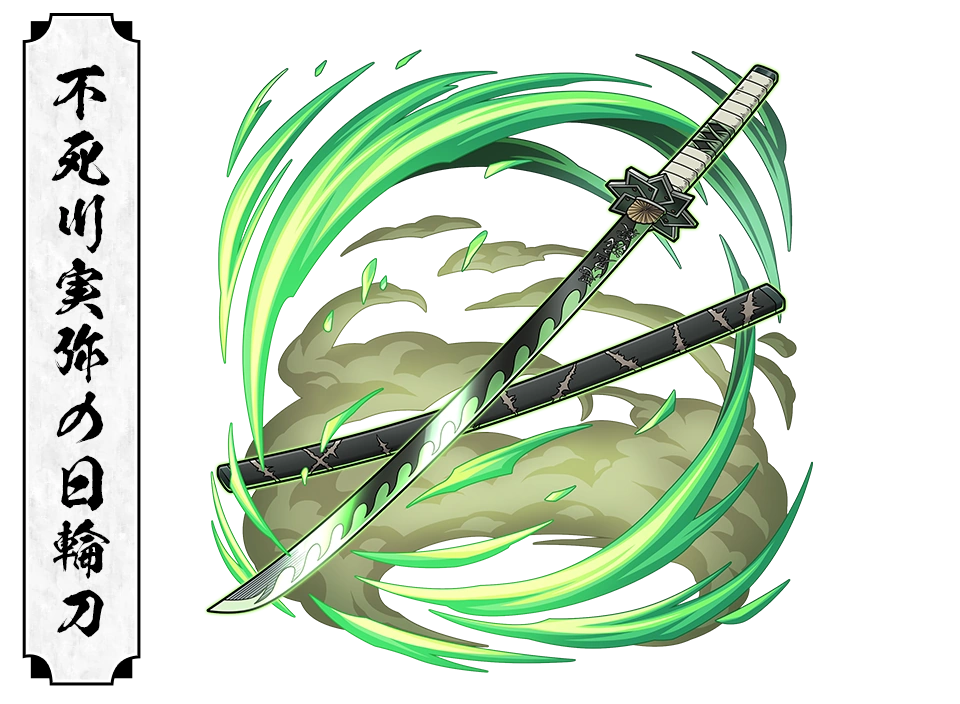

"I'll destroy every last demon with my own hands!!"
About
Sanemi Shinazugawa is the Wind Hashira of the Demon Slayer Corps and one of its fiercest and most relentless warriors. Known for his aggressive personality and incredible combat instincts, he has devoted his entire life to hunting demons after losing most of his family to a demon attack
Although he often appears harsh, short tempered and unforgiving, his actions are driven by a deep desire to protect others from experiencing the same tragedy he endured. His unmatched determination, extraordinary swordsmanship, and mastery of Wind Breathing make him one of the strongest Hashira
Basic Information
Full Name : Sanemi Shinazugawa
Japanese Name : 不死川 実弥
Alias : Wind Hashira
Gender : Male
Race : Human
Age : 21
Birthday : November 29
Height : 179 cm (5'10")
Weight : 75 kg (165 lbs)
Hair Color : White
Eye Color : Lavender
Occupation : Demon Slayer
Rank : Hashira
Affilation : Demon Slayer Corps
Breathing Style : Wind Breathing
Status : Alive (at the end of the manga)
Appearance
Sanemi has spiky white hair, sharp lavender eyes, and numerous scars covering his face and body, each representing the countless battles he has survived. he wears the standard demon slayer corps uniform with an open chest and a white haori draped over his shoulders
Personality
Sanemi is loud, hot headed and fearless, he rarely shows kindness openly and often pushes others away with his harsh words. however, beneath his rough exterior lies a deeply caring person who wants to protect humanity and his yourger brother, Genya
his hatred toward demons is fueled by the tragic loss of his family, yet he continues fighting to ensure others never suffer the same fate
Fighting Style
Sanemi has mastered Wind Breathing, a style focused on overwhelming speed, relentless offense, and powerful slashing attack that resemble violent storms
His Combat style is unpredictable, making him one of the most dangerous Hashira in close combat.
Wind Breathing Forms
First Form : Dust Whirlwind Cutter
Second Form : Claws, Purifying Wind
Third Form : Clean Storm Wind Tree
Fourth Form : Rising Dust Storm
Fifth Form : Cold Mountain Wind
Sixth Form : Black Wind Mountain Mist
Seventh Form : Gale - Sudden Gusts
Nichirin Sword

Color : Green
Type : Katana
Guard : Eight pointed windmill design
Speciality : Fast and destructive Wind Breathing techniques
Abilites
Wind Breathing Master
Marechi Blood
Extraordinary Strength
Exceptional SPeed
Incredible Endurance
Tactical Intelligence
Demon Slayer Mark
Crimson Nichirin Blade
Major Battles
Kokushibo (Upper Rank One)
Muzan Kibutsuji
Infinity Castle Battle
Sunrise Countdown Arc
Relationships
Genya Shinazugawa
Sanemi's younger brother, whom he secretly loved and wanted to protect despite appearing distant
Gyomei Himejima
A fellow hashira whom sanemi deeply respected
Kagaya Ubuyashiki
The leader of Demon Slayer Corps, whom he served with complete loyalty
Trivia
He possesses Marechi Blood, an Extremely rare blood type that intoxicates demons
His body is covered in scars from countless battles